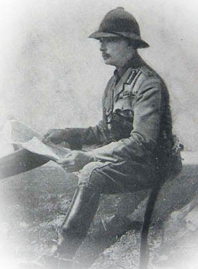

XXIV: BİRİNCİ DÜNYA SAVAŞI
1914 Ağustos’unun ilk haftasında Birinci Dünya Savaşı patlak verdiğinde İstanbul’daki durum budur. Sultan V. Mehmed ise tamamen bir hiç konumundadır. Sadrazam Said Halim sadece saygı duyulan bir kukla olmuş, İttihat ve Terakki Cemiyeti’nde İçişleri Bakanı Talat, Maliye Nâzırı Cavit gibi hatırlı kişiler olmuştur. Fakat Harbiye Nâzırı Enver Paşa Osmanlı İmparatorluğu’nun asıl hükümdarı olmuştur. Almanya ile İtilaf Devletleri arasında savaş ilan edildiğinde Türkler tarafsızlıklarını bildirmiş; fakat Enver Paşa halihazırda Osmanlıların Alman güçleriyle bir işbirliği içinde olacağına dair anlaşmanın müzakerelerini gerçekleştirmiştir. Bu anlaşma, Enver Paşa açıklamayı uygun bulana kadar bazı nâzırlardan bile gizli tutulmuştur. Balkan seferlerinde yaşanan kayıpların ve çektikleri acıların yaralarını henüz sarmamış olan zavallı Türk halkı yeni bir savaşın başlamasından korkmuş ve nüfuz sahibi bazı Türkler, İngiltere ve Fransa’ya duyulan dostluğun, bu iki ülkenin, Osmanlı İmparatorluğu’nun yıllardır düşmanı olan Rusya’nın müttefiki olduğuna dair nahoş gerçeği ortaya çıkarsa da Osmanlı’nın Batı Güçleri’nin dostluğuna güvendiği daha iyi günlerin anılarını hatırlamıştır. İki talihsiz hadise, Enver Paşa’nın elini güçlendirmesi hususunda başlangıç noktası olmuştur. Bu hadiselerin ilki, Britanya amiralliğinin, bu gemileri teslim almak için Türk donanmasının İngiltere’de bulunmasına ve gemilerin parasının ödenmiş olmasına rağmen, Armstrong ve Whitworth’un Osmanlı İmparatorluğu için inşa etmiş olduğu iki gemiye el koyması olmuştur. Britanya amiralliğinin bu davranışı, gemilerin maliyetinin bağışlarla karşılanmış olmasından dolayı en çok Türk halkını yaralamıştır. Daha vahimi ise İngiliz donanmasından kaçan Goben ve Breslav adındaki iki Alman gemisinin 16 Ağustos gününde İstanbul’a sığınması olmuştur. Bu gemiler, iddialara göre, Almanya tarafından Türk hükümetine satılmış ve Türk donanmasına geçmiştir. Fakat gemileri Alman askerleri komuta etmiş ve Alman mürettebatlarıyla birlikte getirilmiştir; İngiliz elçiliğinin itirazlarına ve Türk nâzırlarının vaatlerine rağmen Alman askerleri ve mürettebatı, kendi şapkalarını çıkarıp Türklerin feslerini giyerek güvertelerde kalmaya devam etmiş ve İstanbul’u, Enver Paşa’nın çıkarına olacak şekilde, silahlarının merhametine bırakmıştır. Türklerin, İngiltere’ye karşı duydukları rahatsızlığın akla yatkın tek sebebi, İngiltere işgalinde bulunan Mısır’ın hâlâ Osmanlı İmparatorluğu’nun bir parçası olarak ele alınması ve Osmanlıların ilan ettiği üzere tarafsızlık ilkesine bağlı kalması gerekirken, Mısır hükümetinin, Alman gemilerinin Mısır limanlarından ve sularından çıkarılmasıyla ilgili karar da dahil olmak üzere Almanya’ya savaş ilanı anlamına gelen birtakım önlemler almış olmasıdır. İngiliz hükümeti ise Osmanlı’nın tarafsız kalması halinde Mısır ile ilgili durumun değiştirilmesine dair bir planlarının olmadığına dair Osmanlılara güvence vermiş ve 18 Ağustos tarihinde İtilaf Devletleri, Osmanlı Devleti savaş sırasında “gerçekten tarafsız” olursa “Osmanlı topraklarına saldırmak için Avrupa’daki kargaşa ortamından faydalanan herhangi bir düşmana karşı” Osmanlı’nın bağımsızlığını ve bütünlüğünü koruyacaklarına dair bir bildirimde bulunmuştur. Fakat bu bildirim, Türkleri savaştan korumaktansa onlarla savaşma isteği duyan M. Venizelos’u, dolayısıyla Yunanistan’ı Osmanlılarla çatışmaya girmekten vazgeçirmiştir. Osmanlılar açısından ise tarafsızlık, Enver Paşa’nın önemsediği son şeydir. Bütün Türk ordusu ivedilikle harekete geçirilmiştir. Alman askerleri, silahları ve cephaneleri, Romanya ve Bulgaristan üzerinden Türkiye’ye sokulmuş, Berlin’den büyük miktarda altın İstanbul’a getirilmiştir. Türklerin savaş hazırlıkları, Almanlar tarafından İngiliz İmparatorluğu’nun “şah damarı” olarak ele alınan Süveyş Kanalı’na yönelik olmuştur. Musul ve Şam Kolordularından büyük birlikler, güneye, Gazze ve el-Ariş’e gönderilmiş, yollar Mısır sınırına kadar hazırlanmış, herhangi bir deniz saldırısına karşı Türk mevzilerini korumak için Akabe Körfezi’ne mayınlar döşenmiş ve bu tehlikeye karşı kendilerine yardımcı olmaları adına birçok Bedevî çağrılarak, silahlar kuşatılmıştır.
Hamidiye
Ekim ayının sonunda, sadrazam ve diğer nâzırlar tarafsızlıktan bahsederken, Alman müttefikleriyle iş birliği içinde olan Enver Paşa nihai adımı atmıştır. Türk savaş gemisi Hamidiye ile birlikte Karadeniz kıyılarına çıkan Goben herhangi bir neden veya önceden bildirim olmadan Rus limanlarını bombalamaya başlamış, bu esnada da Bedevî birlikleri Mısır topraklarına baskınlar düzenlemiştir. İki Kasım günü, İngiliz hükümeti Türk provokasyonlarıyla ilgili resmî bir suçlamada bulunmuş ve 5 Kasım’da Osmanlı İmparatorluğu ile İngiltere ve 1878 yılından beri İngiliz işgali altında bulunan ve Berlin Kongresi’nde Anglo-Türk anlaşmaları çerçevesinde resmen İngiliz İmparatorluğu’na bırakılan Kıbrıs arasında savaş ilan edilmiştir. Bir aydan fazla bir zaman boyunca, bir İngiliz sömürgesinin Kahire’de, merhum Hidiv İsmail’in oğlu Prens Hüseyin’i, İstanbul’da kalıp Hidivlik hakkını kaybetmekle ve açıkça Osmanlıların tarafını tutmakla suçlanan Abbas Hilmi yerine sultan ilan edene kadar Mısır’ın durumuyla ilgili bir değişiklik olmamıştır. Müttefiklerinin, Mısır’ın İngiliz sömürgesi olmasına göz yummalarının karşılığında Büyük Britanya, anlaşıldığı üzere, savaşın sonunda Rusya’nın İstanbul ve Boğazlar, Fransa’nın ise Suriye’de hak iddia etmesine razı olacaktır.
Cemal Paşa
Fakat savaşın sonu görünmemektedir. Savaş, Türkler açısından, Enver Paşa’nın ümit ettiği gibi başlamamıştır. Osmanlılar, 1915 yılının Şubat ayına kadar Süveyş Kanalı’ndaki saldırılarını geliştirememiş ve bu tarihe kadar da Mısır’daki İngiliz karargahı hem Hindistan’da hem de Avustralya ve Yeni Zellanda’da yetiştirilen birliklerle güçlendirilmiştir. Türklerin Suriye’deki başkumandanı olan Cemal Paşa, nihayetinde Sina Çölü’ne büyük toplarla birlikte yaklaşık 14.000 askeri ve hatta Süveyş Kanalı’nı aşmak için gerekli olan kayıkları getirmeyi başarmıştır. Süveyş Kanalı’na demirlemiş olan İngiliz ve Fransız savaş gemilerinin önemli görevler üstlendiği ağır çatışmalardan sonra Cemal Paşa büyük kayıplarla geri püskürtülmüştür. İngilizlere yüzlerce mahkum bırakmış; fakat başarılı bir şekilde geri çekilmiş olmasına rağmen Osmanlılar bir daha Süveyş Kanalı’nda çatışmaya girmemiştir. Türklerin, Kafkaslarda Ruslara saldırması, olayları daha da kötü bir hale getirmiş ve başlarda edinilen birkaç zaferden sonra 1915 yılının ilk haftasında, Rusların Sarıkamış ve Ardahan’da Osmanlıları bozguna uğratmasıyla feci bir geri çekilme yaşanmış aynı zamanda Şah hükümetini İtilaf Devletleri’ne karşı işbirliği yapmaya zorlamak için Batı İran’ı işgal eden Türk kuvvetleri de başka bir Rus birliği tarafından geri püskürtülmüştür. 15 Ocak’ta Tebriz’i işgal eden Türkler Ocak ayı bitmeden şehri boşaltmaya zorlanmış ve düzensiz bir şekilde Van’a çekilmiştir. Mezopotamya’da, düşmanlıkların baş göstermesi üzerine, Anglo-Hint Birliği Şattü’l Arap sınırlarına gelmiş ve birlik 23 Kasım’da Basra’yı işgal etmiştir. 1914 yılının sonunda, bu birlik, Dicle ve Fırat Nehirlerinin kesiştiği noktaya, Kurna’ya yerleşmiştir.
Alman birlikleri de ne batı sınırlarında ne de Rusya’da, Enver Paşa’nın ivedi ve ezici bir zafer kazanılacağına dair tahminlerini gerçekleştirememiştir. Osmanlı resmî dairelerindeki insanlar vicdan muhasebesi yapma konusunda ve İttihat ve Terakki Cemiyeti’nin insanlar üzerinde kurmuş olduğu esaretten kurtulmak için fazla atıl olmalarına rağmen, bütün ülkeyi savaş korkusuna sürükleyen ve halihazırda, özellikle başkentte kömür sıkıntısı olmak üzere, erzak kıtlığına yol açan bu savaşa karşı duyulan kayıtsızlığa öfkelenen halk ise büyük bir bunalım yaşamaya başlamıştır. Cihat ilan ederek Müslüman halkın dinî duygularını fitilleme çabaları ise başarısızlıkla sonuçlanmıştır. Dindar Müslümanlar, savaşla ilgili fetvayı çıkarmış olan şeyhülislamı, ateist olduğu iddia edildiği için, dikkate almamıştır, ayrıca Cemiyet üyelerinden yalnızca birkaçının dindar olduğu bilinmektedir. İmparator Wilhelm’in İslam dinini benimsediği ve Hacı Wilhelm Mehmed ismini aldığına dair hikâyeler uydurulmuş ve vilayetlerdeki birçok Alman askeri gösterişli bir şekilde fes takmış, ceketlerinin kollarına üzerinde Kur’an’dan ayetler yazılı kolçakları iliştirmiştir. Ulema bile, Osmanlı Devleti aynı şekilde kâfirlerle işbirliği içinde savaşırken kâfirlere karşı Cihat ilan edilmiş olmasını sorgulamıştır. Almanların kibri ve Türklerin verimsizliği ile yolsuzluğu, Türk ve Alman askerleri arasında anlaşmazlıklara neden olmuştur. Almanya’dan alınan ve alınmadığı takdirde Türklerin savaşa devam edemeyeceği, savaş malzemeleri ve mühimmat tamamen Bulgaristan ve Romanya’nın tehdit edilmesiyle alınabilmiştir. Balkan halklarının çoğu kendilerini İtilaf Devletleri’ne yakın hissetmiş ve bu devletlerin kazanacağı herhangi bir başarı Balkan hükümdarlarının Alman hayranlığına karşı şiddetli tepkiler duymasına neden olmuştur.
Winston Churchill
En iyi deniz kuvvetleri komutanları tarafından tam olarak desteklenmemiş olan cesur tasarı, Bahriye Nâzırı Winston Churchill’in önayak olmasıyla Londra’da görüşülmüştür ve başarılı olması durumunda savaşın birkaç yıl erken bitmesine yardımcı olacağı söylenmiş, fakat tasarının başarısızlığı İngiltere açısından felaketlere neden olmuştur. İngiliz donanması, İstanbul’a giden yolu açacak olan Çanakkale’ye gönderilmiş ve Türkleri bozguna uğratması hedeflenmiştir. 19 Şubat 1915 günü, İngiliz ve Fransız savaş gemileri Çanakkale’nin dış hisarlarını topa tutmaya başladığında hedeflenen şey donanmanın yapacağı ani saldırı olmuştur. Fakat bu ani saldırı başarısızlıkla sonuçlanmış ve 5-7 Mart tarihlerinde, İtilaf Devletleri’nin son birleşik filoları olan Ocean ve Irresistible ile Fransız savaş gemisi Bouvet mayınlar sayesinde batırılmış, Inflexible ve Gaulois adlı diğer savaş gemileriyse ciddi şekilde tahrip edilmiştir.
HMS Irresistible
Donanmayı Çanakkale kıyılarına çıkararak işbirliği yapması adına seferi kuvvet gönderilmesine karar verilmiş ve bu süre içinde de Türkler savunma hatlarını güçlendirme ve Anadolu’dan destek birlikler getirme konusunda vakit kazanmıştır. 25 Nisan’da, Mısır’dan yola çıkan İngiliz, Avustralya ve Hint birlikleri Boğazların Avrupa yakasında çeşitli noktalara girmiş aynı anda Fransız kuvvetleri de Asya yakasını işgal etmiştir. Asya yakasında bölgelerin terk edilmesi gerekmiş ve 1-4 Mayıs, 6-8 Mayıs, 4 Haziran ve 28 Temmuz tarihlerinde, Kirte tepelerinde İtilaf Devletleri için talihsiz sonuçlar doğuran ve Türklerin her türlü savunma harbinde azimle çarpıştığı savaşlar, aşılması güç bir biçimde güçlendirilmiş olan cephelere yapılan saldırıların umutsuzluğunu göstermiştir. Her iki taraf da büyük kayıplar vermiştir. İngiliz denizaltı gemileri Çanakkale’ye ulaşmış ve Marmara Denizi’ni Türk gemileri için tamamen kapalı hale getirmiş olsa da Türklerin kalabalık siperlerindeki ölülerin gömülmesi veya yaralıların taşınmasından daha çabuk bir şekilde dar boğazlardan güvenle geçebilecekleri Asya kıtasındaki karayollarından destek almışlardır. Birlikler, Enver Paşa’nın, Osmanlıların İtilaf Devletleri’ni denize dökeceğine dair verdiği sözleri yerine getirme konusunda başarısız olurken Alman denizaltı gemileri, İngiliz deniz operasyonlarını ciddi bir şekilde engellemeye başlamıştır. Yeni bir saldırıyı gerçekleştirebilecek güçteki İngiliz takviye birlikleri, Ağustos ayında Gelibolu’ya ulaşmış ve bu sefer, ulaşılması ve ele geçirilmesi durumunda, Türklerin ana cephelerinin geride bırakılacağı ve Boğazların egemenliğini ve geçiş hakkını İtilaf Devletleri’ne vereceği, ayrıca yarımadayı en dar noktasından ikiye ayırma imkânı tanıyacak olan Anafarta ve Sarıbayır tepelerindeki Suvla ve Anzak koylarını hedef almıştır. İngiliz kuvvetleri bir süreliğine üstünlüğü sağlamış; fakat yaşanan gecikmeler ve yapılan hatalar dolayısıyla başarısızlığa sürüklenmiştir. İngiliz kuvvetlerinin başarısızlıklarının nedeni tek bir cümleyle özetlenebilir: “Genç birlikler, yaşlı generaller.” Buradaki mücadele, İngilizlerin felaketle sonuçlanmış olan son gayretleridir. Zafer kazanacaklarına dair umudunu hiçbir zaman yitirmemiş olan Ian Hamilton 17 Ekim gününde kumandanlığı C. C. Munro’ya devretmiş, Lord Kitchener’in Kasım ayında Gelibolu’ya gelmesi ise hem iklim şartları hem de askeri nedenlerle alınan kararların değiştirilmesine yardımcı olmamıştır. 1915 yılı Aralık ayının son haftası ile 1916 yılı Ocak ayının ilk haftasında, fırtınalı Doğu Akdeniz sularının haberleşme araçlarını ve cephaneleri tehdit edeceği şiddetli kış mevsimi başlamadan önce, daha fazla kayıp yaşanmadan yarımada sessizce boşaltılmaya başlamıştır. Gelibolu seferi, İngilizlere 112.000 askerle birlikte hastalıklardan ölen binlerce kişiye mal olmuştur. Türkler de çok ağır kayıplar vermiş ve Türk birliklerinin güçlerinin zayıflamasıyla ortaya çıkan sonuçlarla Osmanlı ordusunun belkemiği kırılmıştır.
General Hamilton ve Gouraud
İtilaf kuvvetlerinin Gelibolu’da uğradıkları mağlubiyetin siyasî sonuçları daha ağır olmuştur. Bu yenilgi, Yunanistan’da, Kral Konstantin ve Alman yanlısı partinin önsezilerini haklı çıkarmış ve Helenist arzularına ulaşmak için İtilaf Kuvvetlerinin yanında savaşa girmeyi başta uygun bulan Venizelos’un sezgileri ve Yunan halkının hislerinin bir süreliğine başarılı bir şekilde ele alınmasına yol açmıştır. Yenilgi, ayrıca, Romanya’nın tarafsızlığının bir süre daha sürdürülmesine ve 1915 yılının yaz ve kış mevsimlerinde Almanların, Rusları yalnızca Karpatlar değil Polonya’dan da çekilmeye zorlamasına yardımcı olmuştur. Ağustos ayına kadar İtalyanlar Osmanlı İmparatorluğu’na karşı savaş ilan edene dek resmileştirilmese de mayıs ayının sonunda İtalya’nın İtilaf Kuvvetleri’ne katılmasıyla ilgili olarak; Meriç Nehri’nin sağ kıyısında küçük bir toprak parçası karşılığında, kendini Alman kuvvetlerine adamadan evvel, Bulgar Çarı Ferdinand’ın Bulgaristan’ın tarafsız olacağına dair garanti vermesiyle Türkler Bulgar saldırılarına karşı kendilerini güvende hissetmiş; fakat Ferdinand daha sonra tarafsızlık maskesini düşürmüş ve Rusya’nın özgür bıraktığı Bulgar ordularını nefret ettikleri Sırp kardeşlerine karşı yalnızca Merkezî İmparatorluklara değil ayrıca eski hükümdarları olan Türklere müttefik olacak şekilde savaşa sürüklemiştir. Sofya’da saray ve kabinenin Alman yanlısı üyeleri İngiliz deniz kuvvetinin önemini, Türkler gibi, Gelibolu’daki sonuçla ölçerek yanlış değerlendirmiştir.
Osmanlıların Gelibolu’daki başarısı Enver Paşa’ya yaramıştır. Sultan’a Goltz, Alman unvanı verilmiş; fakat Enver başarıyı kendisine mal etmiştir. Talat ve İttihat ve Terakki Cemiyeti’nin diğer üyeleri, Enver Paşa’nın diktatörlüğüne öfke duymaya başlamış, Enver Paşa ise Gelibolu savunmasında Almanların oynadığı rolü göz ardı ederek, Alman danışmanlarından, özellikle de sayesinde Alman merkezine ve de Alman imparatoruna danışma fırsatı bulduğu General Liman von Sanders’tan daha ciddi tavsiyeler alma konusunda sabırsızlanmıştır. 1915 yılının yaz mevsiminde, Süveyş Kanalı’na yeni bir saldırı için hazırlıkların yapılması konusunda Cemal Paşa bazı talimatlar almıştır. Birliklerini güçlendirmesi için Alman takviyelerini bekleyen Türkler, 1916 yılının Ağustos ayına kadar ciddi bir hamlede bulunmamış, Süveyş Kanalı’nın rotasına dahi girmeden yollarını kaybedince harekete geçmiştir. Bu esnada, Trablus’ta İtalyanlara karşı savaşan Enver Paşa, o zamana dek İtilaf Kuvvetleri’nin dostu olmuş olan Senusî’yi bu kuvvetlere karşı kışkırtmak ve Libya çöllerindeki kavimleri askerî açıdan yetiştirmek adına üvey kardeşi Nuri Bey’i göndermiştir. Senusîler hiçbir zaman aşılması güç olmamış; fakat 26 Şubat 1916 tarihinde İngiliz birliği Senusîleri cezalandırana ve Mısır’ın Trablus sınırında Salum’u tekrar işgal edene dek Mısır’ın batı sınırlarını yağmalayarak Enver Paşa’nın amacını kısmen gerçekleştirmişlerdir. Enver, Hindistan’da, 1915 yılının sonunda Berlin’in ateşini fitillediği isyanlarla ilgili hikâyelere itibar etmiş olmasa da silahlarını, Hintli anarşistlerin lehine, Bengal’de boşaltmak için, 1915 yılı boyunca, özellikle aşırı bağnaz mollaların tavsiyeleri, Pencap’ta baş gösteren ciddi fakat kısa ömürlü huzursuzluklar ve Alman ajanları tarafından ortaya atılan başarısız kumpaslar sayesinde, kuzeydoğu cephesinde art arda ortaya çıkan küçük ayaklanmalarla cesaretlenmiştir. İran’ı İtilaf Devletleri’nin yanına çekme planı 1915 yılının kasım ayında, şahın, Türkleri İran’ın kuzeybatısından atmaya çalışan Rus birliklerinin gelmesi üzerine Tahran’dan Kum’a çekilen Alman, Avusturyalı ve Türk delegelerine sığınma talebini reddetmesiyle ağır bir başarısızlıkla sonuçlanmıştır. Kuzeyden Rus takviyeleri ve güneyden Percy Sykes komutasında İranlılardan oluşan küçük bir birlik gerekli tedbirleri alana ve İtilaf Devletleri’nin zayıflamaya başlayan itibarlarını canlandırana dek Alman ve Türk liderleri komutasındaki paralı askerler İran’ın güney kesimlerinde ve hatta Belucistan sınırlarında kargaşa ortamı yaratmış, İngiliz Konsolosluğu’ndaki yetkililere saldırmış ve bu kişileri öldürmüş ve barış yanlısı halkın arasında terör estirmiştir. Mezopotamya’da dahi rüzgâr İngilizlerin aleyhine esmeye başlamıştır. H. Nixon komutasında, 1915 yazında, Fırat ve Dicle Nehirleri eski haline dönmüştür. 28 Eylül’de yaşanan şiddetli çatışma sonrasında Kutü’l-Amare işgal edilmiş ve Gelibolu başarısının Doğu’nun dehlizlerinde yankılanan seslerini bastırmak umuduyla Bağdat’ın işgalini öngören çarpıcı bir anlaşma yapılmıştır. 24 Kasım’da, Bağdat’ın yirmi beş mil güneyinde gerçekleşen Selman-ı Pak Muharebesi’nde Türkler yenilgiye uğramış; fakat General Townsend’in komuta ettiği küçük birlikte ağır kayıplar olmuştur. Sayı ve mühimmat açısından üstün olan, Alman kumandan Mareşal von der Goltz komutasındaki takviye Türk birliği mağlup edilmiş; fakat General Townsend bu birliğin baskısıyla, ağır kayıplar vererek, Kut’a çekilmek zorunda kalmış ve burada etrafları daha güçlü bir orduyla çevrilmiştir. 5 Aralık gününde, Kut kuşatması başlamıştır. Townsend, başlangıçta kendi cephanesini hafife almış ve dolayısıyla etrafı çevrilmiş olan karargâhı kurtarmak adına Hindistan ve Avrupa’dan alelacele toplanan ve silahları yetersiz olan takviyelerle Türklerin en kuvvetli cephelerine art arda saldırılar gerçekleştirilmiş, şiddetli yağmurlardan ve hareket imkânının olmamasından dolayı kendilerine pahalıya mal olan küçük çapta başarılar kazandıklarında bile umutsuzluktan kurtulamamışlardır. Kut altı hafta değil tam dört buçuk ay boyunca direnmiş ve 9 ve 22 Nisan tarihlerinde, İngilizlerin, Türklerin Sanaiyat’taki esas mevzilerine gerçekleştirdikleri saldırıların başarısızlıkla sonuçlanması üzerine yiyeceklerin tükenmesi, General Townsend’i 29 Nisan gününde silah bırakmaya zorlanmıştır. Von der Goltz, Alman kaynaklarına göre tifüs hastalığına yenik düşerek, Türk kaynaklarına göre ise bir Türk askerinin saldırısının ardından vefat etmiş ve silahların teslim alınmasını Enver Paşa’nın amcası gerçekleştirmiştir. Anadolu’da Dicle’den mahkûm alınarak uzun bir yürüyüşün zorluklarıyla karşılaşmış birliğin sayısı 3000 İngiliz ve 6000 Hintli’ye kadar düşmüş; fakat bu birlik Yorktown’dan beri düşmanına boyun eğen en büyük İngiliz ordusu olmuştur.

General Townsend
İstanbul’a getirilen ve ateşkes gerçekleştirilene kadar Büyükada’da huzur içinde yaşamasına izin verilen General Townsend’e yapılan istisna dışında, savaş zamanında Türklere esir düşen mahkûmların hiçbiri, Türklerin duyarsızlıkları ve acımasızlıklarından, Kut karargâhında hayatta kalanların çektiği kadar çekmemiştir. Esirlerin büyük bir kısmı açlığa ve savaşın geri kalan kısmı boyunca alıkonuldukları bölgelerde maruz kaldıkları muamelelere yenik düşmüştür. Bazı askerler ve diğer mahkûmlar, Alman hapishanelerinde tutulan esirler kadar sıkı gözetim altında olmamış ve büyük maceralardan sonra kaçmayı başarmıştır. Fakat İtilaf Güçleri’nin, Osmanlı Devleti dışındaki hiçbir düşman ülkesinde, mahkûmlara gönderilen yardımlar sürekli olarak yağmalanmamış ve Türk hükümeti, tarafsız kuvvetler temsilcilerinin, savaş mahkûmlarının tutulduğu kampları ziyaret etmesine izin vermemiştir. Savaş boyunca Türklerin ele geçirdiği 16.583 İngiliz ve Hintli mahkûmun, 3290’ı ölmüş ve 1506’sı kaçmayı başarmıştır. Savaşın sonunda 7414’ü hâlâ esir olarak tutulmuştur. Geri kalanlarla ilgili bir bilgiye sahip olunmasa da bu sayının yarısının telef olduğu düşünülmektedir.
Savaş boyunca Türkler tarafından kazanılan son başarı olan Kut zaferinden önce dahi Türkler hükümdarlarına çok fazla güven duymaya başlamıştır. 1915 yılının başlarında Ruslar Kafkaslara yapılan Türk saldırılarını püskürtmüş; fakat bu başarılarını daha fazla sürdürememişlerdir; Türklerin Gelibolu’da kazandığı zaferi sürdürülmemesi adına Rus orduları çaba göstermiş; ancak Avrupa’daki cephelerin güçlendirilmesi oldukça güç olmuş, 1915 yılı boyunca Anadolu’da, bazılarının çok şiddetli yaşandığı savaşlarda düzen kurulamamış ve bir sonuca ulaşılamamıştır.
Enver Paşa, 1916 yılında, Gelibolu’dan yola çıkan iki yüz kişilik bir taburla Kafkaslardan tekrar Ruslara saldırmayı planlamıştır. Fakat Büyük Dük Nicolas, Avrupa’daki Rus ordusunun komutasını gerçekleştirmesi için çarın kararıyla Kafkaslarda serbest bırakılmış ve şiddetli soğuklar ve kar yağışı altında Türk birliklerine pusu kurarak, 16 Şubat 1916 gününde, Erzurum’da Türk kalelerini ele geçirmiştir. Rus birliklerinden biri, 18 Nisan tarihinde işgal edilmiş olan Trabzon’a, diğeri Fırat ve Dicle Nehirlerinin arasında Muş ve Bitlis’e uzanan dağlardan güneye doğru gitmiş, General Baratoff komutasındaki düzensiz bir birlik ise Türkleri Batı İran’dan çıkarmış ve Kirmanşah ve Hamedan’dan engebeli bir dağlık arazi boyunca ilerleyerek, Rusların tebliğinin belirttiğine göre “Bağdat yolunda”, 11 Mart tarihinde Kerind’e ulaşmıştır. Fakat bu ilerleyiş, İran’ın dağlık arazilerinin yerini Mezopotamya ovalarının aldığında ve İtilaf Devletleri’nin Kut’ta silah bırakmasından dört gün sonra, 2 Mayıs gününde Kasrı Şirin’de ortaya çıktıklarında, güçlü Türk savunmaları tarafından durdurulmuş ve 1916 yılının sonlarına doğru Rus saldırıları hız kesmeye başlamıştır. Mühimmat ve yiyecek kıtlığı Rus ordularını yalnızca Avrupa’da değil Anadolu’da da kötü etkilemiştir. Buna rağmen Ruslar, 25 Temmuz tarihinde Erzincan’ı işgal etmiş ve buradan Sivas’a ilerlemiştir. Yitirmiş oldukları Muş ve Bitlis’i ağustos ayında tekrar ele geçirmişler; fakat 1917 yılının başlarında İran sınırlarında bir kez daha saldırıya geçmişlerdir. Güçleri tükenmek üzere olduğu için 1 Nisan 1917 tarihinde Bağdat’ın seksen beş mil kuzeydoğusunda bulunan Hanekin’e geri dönmüşlerdir. Rus devrimi, cephelerde perişan olmuş olan birliklerin arasında çok çabuk yayılmış ve o tarihten itibaren Rusya hem Asya’da hem Avrupa’da askeri bir güç olmaktan çıkmıştır. Her şeye rağmen, Rusya, Osmanlı kuvvetlerini yıpratmada önemli bir rol oynamış ve savaş sahnesinden tamamen çekilmeden önce İngiliz İmparatorluğu’nun kaynakları Rusya’nın çekilmesini telafi etmek için düzenli bir şekilde ayrılmış ve bu da Türklerin üzerinde hem Mısır hem de Mezopotamya’dan baskı oluşturmuştur.
1916 yılının ortalarında, Arabistan’da, sultanın hem siyasî hem de manevî otoritesine darbe vuran olaylar vuku bulmuştur. Mekke Şerifi, makamı ve Hz. Muhammed’in de tabii olduğu Kureyş kabilesinden gelmesi sayesinde Arap dünyasında büyük bir itibar kazanmış ve Arapları Osmanlı boyunduruğundan kurtulup bağımsızlıkları için mücadele etmeye çağırmıştır. Hicaz’daki Araplar bu çağrıya cevap vermiş ve Araplar, Peygamberin kabrinin zarar görmemesi adına Kutsal Şehri topa tutmaktan çekindiği için savaş bittikten sonra askerlerin bitap düşmesi üzerine teslim edilen Medine dışındaki güçsüz Türk karargahlarını bir hamlede alt etmiştir. Ekim 1916’da, Şerif kendisini Hicaz Kralı ilan etmiş ve 16 Aralık tarihinde İngiliz hükümeti tarafından resmen tanınmıştır. Oğlu Emir Faysal, Arap kuvvetlerini komuta etmiş ve çöllerin yabani insanlarının güveninin nasıl kazanılacağını çok iyi bilen Albay Lawrence ile diğer İngiliz askerlerinin yardımıyla çabucak silah kuşanarak Filistin ve Suriye’ye ilerleyen İngiliz ordusuna yardımcı olacak bir birlik kurmuştur. Bu birliğin askerî boyutunun yanı sıra, Şerif’in İslam’ın kutsal şehirlerindeki ulemanın onayından geçen bu hareketi, iki kutsal şehir olan Mekke ve Medine’nin koruyucusu olan sultanı Halifelik sıfatından mahrum ederek İstanbul’daki İslamcılık akımının temelini sarsmıştır.
İtilaf Devletleri’nin Mezopotamya’da yaşadıkları Kut felaketi, General Townsend’in teslim olmasının üzerinden bir yıl geçmeden telafi edilmiştir. General S. Maude başkumandanlığı, 28 Ağustos 1916 tarihinde, General W. Lake’ten almış ve bahar mevsiminin sonlarında saldırıları başlatmıştır. Dicle’nin akıllıca, fakat pahalıya mal olan bir şekilde geçilmesiyle sonuçlanan, iki ay süren şiddetli çatışmalardan sonra Türklerin Şamran’daki yaylım ateşinin altında İttifak Kuvvetleri Kut’tan çıkarılmış ve İtilaf Birlikleri bölgeyi 24 Şubat 1917 tarihinde tekrar ele geçirmiştir. Türkler, savaşmaya devam ederek Bağdat’a çekilmiş ve İngilizler de peşlerinden 11 Mart günü Bağdat’a girmiştir. İngiliz başkumandan, 19 Mart tarihinde, Mezopotamya halkına İngilizlerin onları özgürlüklerine kavuşturacaklarını belirten bir bildiri sunmuştur. Almanların Anadolu’dan uzanan kuzey hattıyla birleştirmek amacıyla inşa ettikleri Bağdat demiryollarının güneyine giden İngiliz birlikleri 23 Nisan gününde tren garı olan Samara’yı işgal etmiş ve S. Maude, ele geçirdiği stratejik noktaları sağlamlaştırmak ve Bağdat’ın işgalinden hemen sonra barış, refah ve özgürlük vaadiyle ilan edilen bildiri dolayısıyla ülkenin yönetimini düzene sokmak adına sıcak geçen yaz mevsimi boyunca Bağdat’ta bulunmuştur.
Bağdat’ın düşmesinin üzerine, Alman Karargâhı, Enver’in çağrısına cevaben, Osmanlı İmparatorluğu’ndaki Alman Askerî Heyeti’ne danışmadan, Mezopotamya’nın tekrar ele geçirilmesini amaçlayan ve Yıldırım olarak bilinen yeni bir kuvvetin oluşturulmasında Osmanlılara yardım etmeyi kabul etmiştir. Almanlar bu yeni kuvvetin donanımı için 5.000.000 altın ve Prusya’nın eski harbiye nâzırı ve Romanya’daki Alman birliklerinden birinin kumandanı olan General von Falkenhain komutası altında, yeni piyade ve süvari bölükleriyle birlikte ağır silahlar, uçaklar, öncü kuvvetler ve sahra hastaneleriyle bir birlik tahsis etmiştir. Yıldırım kuvveti, Avrupa ve Kafkaslardan çağrılan Türk bölüklerinden oluşmuştur. Yıldırım kuvvetlerinin merkezi, 1915 yılının başında Süveyş Kanalı’na gerçekleştirilmiş olan başarısız saldırılardan beri Filistin ve Suriye’yi elinde tutan Cemal Paşa’nın başkumandanlığı altında 1917 senesinin Ağustos ayında Halep’te kurulmuştur. Fakat bu kuvvet, General Maude, 18 Kasım tarihinde Bağdat’ta koleradan ölerek parlak kariyerini zamansız bir şekilde sonlandırmadan önce Fırat ve Dicle’ye geri çekilmek zorunda bırakılmış, yetersiz bir şekilde takviye edilmiş olan ve 28-29 Eylül tarihlerinde Ramadi’de, 6 Kasım’da ise Tikrit’te bozguna uğratılmış olan Türk ordusunun geri kalanının bulunduğu Mezopotamya’ya daha fazla yaklaşamamıştır. Musul’un işgaliyle Türklerin Mezopotamya’dan ihraç edilmesi görevi, son ateşkesten bir hafta önce, Türk birliklerinin bu cephede bozguna uğratılmasının ardından W. Marshall’a devredilmiştir.
Türkler, Filistin ve Suriye’de de büyük felaketlerle karşı karşıya kalmıştır. Mısır kocaman bir silahlı kampa dönüştürülmüş, Süveyş Kanalı üzerinde Kantara’da yeni bir temel kurulmuş ve demiryollarını da çöl boyunca uzatarak Türklerin cephelerine ulaşılmıştır. 1917 yılının Mart ve Nisan aylarında, Türklerin Gazze’deki savunma hatlarını kırmaya yönelik çabalar kısmen başarılı olmuş; fakat Türklerin Gelibolu ve Kut’ta yakaladıkları geçici başarıyla sağladıkları askerî avantajın Türk harbiye nâzırı tarafından ziyan edilmiş olması üzerine Alman Askerî Heyeti’nin başı olan General Liman von Sanders aklını kurcalayan olması muhtemel vahim olaylarla ilgili riskleri ne Enver Paşa’dan ne de Alman Askerî Karargahı’ndan gizlemiştir. Yıldırım kuvvetleri Mezopotamya’da başarı sağlayamamış ve aynı şekilde Suriye’yi de geri alamamıştır. Enver Paşa, Rusya’nın çöküşüyle, Kafkaslarda bir kez daha Turancılık hayalini gerçekleştirmeyi düşünürken, 1917 yılının Haziran ayının sonlarında Mısır Seferî Kuvvetleri’nin başına geçmiş olan General Edmund Allenby halihazırda Mezopotamya’dan çıkarılmış olan Türkleri Filistin ve Suriye’den de ihraç etmek amacıyla yapacağı büyük saldırı için hazırlıklarını gerçekleştirmiştir. Birüssebi 9 Ekim, Gazze ise 7 Kasım tarihinde ele geçirilmiştir. 9 Aralık tarihinde Kudüs teslim olmuş ve General Allenby birliklerinin başında büyük bir saygı içinde atından inerek şehre girmiştir. 1918 Mart’ında Akdeniz kıyılarındaki Akka ve Hayfa’nın işgaliyle birlikte Ürdün’den Medeba’ya geçiş, sonbaharın başlarında, bütün Türk ordusunun Suriye’den çıkarılması ve İngiliz ve Arap birliklerinin Şam ve Halep’e girmesiyle sonuçlanan askerî operasyonların gerçekleştirilmesini sağlamıştır. 1918 Eylül’ünün son iki haftasında, 3000 Alman ile birlikte 70.000 Türk askeri ve 350 adet silah General Allenby tarafından ele geçirilmiş ve Faysal ile adamları da 8000 mahkumu esir olarak almıştır.
General Allenby, işgal ilanını, Davud Kulesi dibinde dinlerken
Osmanlı İmparatorluğu’nun sonu gelmiş gibi görünmektedir. Zafer beklentileri tükendiğinde Türklerin Almanlara duyduğu güvensizlik de hızlı bir şekilde artmıştır. 1916 senesinde, Almanya, Türk ordusunu, savaş için Galiçya, Sırbistan ve Romanya cephelerine gönderilmek üzere yedi bölüğe ayırmıştır. Osmanlı Devleti ve Bulgaristan’ın, savaş sonunda ele geçireceklerine inandıkları ganimetlerle ilgili yaşadıkları çatışmalarda Almanya genellikle Bulgarları desteklemiştir. Kral Konstantin ve Alman eşinin Atina’dan ayrılması üzerine Yunanistan nihayetinde Almanya’nın kurduğu tuzaklardan kurtulmuş ve önce savaşın ilk zamanlarında ve daha sonra da 1915 yılının sonbaharında Bulgaristan Sırplarla savaştığında Yunanistan’ın İtilaf Devletleri yanında savaşa girmesi için büyük çaba sarf etmiş; fakat başarısız olmuş olan M. Venizelos’un olağanüstü önderliğinde Yunan halkı nihayet gücünün farkına varmış ve Yunan ordusu hem Osmanlı İmparatorluğu’nun hem de Bulgaristan’ın hesaba katması gereken bir faktör olarak Selanik’te savaş meydanlarına girmiştir. Yalnızca Alman ordusunun ihtiyaçlarını bile zorlukla karşılayan Alman savaş sanayilerinin kaynak bulamamasıyla birlikte Osmanlılara sağlanan silah ve cephaneler tükenmeye başlamıştır. Almanların gaddarlığı, Türk ve Alman askerleri arasında savaş alanlarında çatışmalara neden olmuş ve savaşın son safhasında İtilaf Devletleri esir düşen Almanları Türk askerlerinin hışmından korumak için farklı hücrelere kapatmıştır. Almanlar ise Türklerin yaptıkları yolsuzluklardan ve beceriksizliklerinden şikayet etmiş ve hem askerî hem de sivil yetkililerin tahribatlarını durdurmak adına anlaşmaya varılmadığı takdirde daha fazla mühimmat vermemekle tehdit etmiştir. 1917 senesinin Ekim ayında Alman İmparatoru Türkler ve Almanlar arasında yaşanan fırtınayı dindirmek adına İstanbul’a gitmiş ve General Liman von Sanders İmparator’a Gelibolu’daki savaş alanlarında eşlik ederken, II. Wilhelm, bu açık sözlü Alman generalin Türk direnişiyle ilgili asıl beklentilerine dair ilginç hikâyesini dinlemek durumunda kalmıştır. Buna rağmen II. Wilhelm, padişaha topraklarının tamamıyla birlikte Arabistan’ın Kutsal Topraklarının tekrar ele geçirilmesi anlamına gelen Halifelik unvanını koruma garantisi vermiştir. Birkaç hafta sonra, Kudüs düştüğünde ve Türkleri Suriye’den tamamen çıkarma amacı güden Allenby ile işbirliği yapmak için Hicaz kralının ordusu Arabistan’dan yola çıktığında Alman hükümeti, İngilizler Filistin’den çıkana kadar Belçika’dan çekilmeyeceklerine dair ant içmiştir. Turancılık gayesini Arap vilayetleri ve hatta Halifeliğin kaderinden daha fazla önemseyen Enver Paşa Bolşeviklerle yapılacak olan Brest-Litovsk Antlaşması’nda Osmanlı İmparatorluğu’nun Almanlar tarafından davet alması üzerine oldukça memnun olmuştur. Brest-Litovsk Antlaşması çerçevesinde, Sovyet hükümeti, yalnızca Rusya’nın savaş esnasında ele geçirdiği yerleri değil ayrıca Çarlık Rusyası’na Rusya sınırları dışında eklenen bütün toprakları da Osmanlı İmparatorluğu’na bırakacağını taahhüt etmiştir. Türklerin ümitsizliklerini bir süreliğine de olsa yok eden bu diplomatik başarı, Enver Paşa dışında herkesin günden güne daha çok umutsuzluğa kapıldığı askerî vaziyet üzerinde hemen etkili olmamıştır. Talat, Berlin üzerinden Brest-Litovsk’tan döndüğünde, Osmanlı İmparatorluğu’nu çöküşten kurtarmak için, 300.000 Alman’dan oluşan bir ordunun kurulması gerektiğine dair bir talepte bulunmuştur. Böyle bir talep, baştan savma bir cevapla geçiştirilememiştir.
Brest Litovsk Barış Antlaşması’nın İlk İki Sayfası
İttihat ve Terakki Cemiyeti ve Meclis’teki anlaşmazlıklar gittikçe daha şiddetli bir hal almıştır. Zafer kazanılacağına dair tahminleri doğru çıkmayan Enver Paşa’nın egemenliği zayıflamaya başlamış ve Enver Paşa’nın, 1917 senesinin Şubat ayında Said Halim’in ardından sadrazamlık mertebesine ulaşan Talat ve harbiye nâzırı ile arasındaki gizli düşmanlık o kadar şiddetli bir hal almıştır ki, Talat’ın yandaşlarından biri olan ve Cemiyet’in genel sekreteri seçilen Şükrü Paşa, Enver Paşa’yı Alman güçlerine ekonomik imtiyazlar vermekle açık açık suçlayacak kadar iler gitmiştir. Enver, Şükrü’nün hesabını görmesi için Maliye Nâzırı Cavit’i görevlendirerek bu suçlamalara cevap vermiştir. Bunun üzerine Şükrü görevinden çekilmeyi seçmiştir. Birkaç ay sonra, 1918 Mart’ında, o zamana dek Sofya’da bakan olarak görev alan Fethi Bey Heyet-i Mebusan’a girmeyi başarmış ve ihtikar ve gıda maddelerinde yaptıkları fiyat artışlarından dolayı hükümete özellikle de Enver Paşa’ya yaylım ateşinde bulunmuştur.
Sultan Vahidettin
Tahta çıktığı günden beri İttihat ve Terakki Cemiyeti’nin elinde kuklaya dönen zavallı Sultan Mehmed’in ölümü üzerine kardeşi VI. Mehmed 3 Temmuz 1918 gününde tahta çıkmıştır. Kendi irade gücüne sahip ve Enver Paşa’nın düşmanı olan bir önceki vâris Yusuf İzzeddin, Türk kaynaklarına göre, Orta Avrupa’ya gitmek için İstanbul’dan ayrılmak üzereyken, 1916 senesinin şubat ayında, intihar etmiş ve Türk halkı bu ölümü Sultan Abdülaziz’in 1876 yılında gerçekleştirdiği intiharın korkunç bir tekrarı olarak ele almıştır. VI. Mehmed’in, Yusuf İzzeddin’in Enver Paşa’ya karşı gösterdiği cesur tutumu sergilemesi beklenmemiş; fakat Mehmed, kardeşi gibi önemsiz bir varlık olmayı da reddetmiştir. Ülke ve özellikle de başkentte yaygınlaşmaya başlayan karşıtlık artık sarayda da etkili olmaya başlamış ve 1918 yılının Eylül ayının sonunda Bulgaristan savaştan pes edip Osmanlı İmparatorluğu’nu Selanik’ten yola çıkan İtilaf Devletleri ordularının işgaline bıraktığında Türk hükümeti sarsılmaya başlamıştır. Allenby’nin Suriye’de kaydettiği başarı, Cemal’in komuta ettiği kuvvetleri tamamen yok ettiği için nihai darbe olarak ele alınmış ve bunun sonucunda geride neredeyse hiç bir Türk ordusu sağ kalmamıştır. Savaşın ilk yıllarında, Osmanlı İmparatorluğu savaş alanında bir milyondan fazla askere sahip olmuştur. Türk kaynaklarına göre, Osmanlıların ölü bilançosu yaklaşık olarak bir milyonu bulmuş, bu sayının 427.000’i öldürülmüş, 400.000’i yaralanmış, 113.000’i de esir düşmüş veya kayıplara karışmıştır. Osmanlı İmparatorluğu’nun silahlı 200.000 askeri kalmıştır. Çok büyük miktarlarda savaş ekipmanlarını kaybetmiş ve mühimmat ve cephane tedarikleri tükenmeye başlamıştır. İmparatorluğun Arap vilayetleri de yitirilmiştir. Halk açlıktan ölmek üzeredir. Amerika Yardım Heyetleri’ne göre, 1914 yılından beri toplam nüfusun çeyreği savaştan, hastalıklardan, açlıktan ve katliamlardan dolayı telef olmuştur. Oyun, Osmanlılar için bitmiştir. Enver, Talat ve İttihat ve Terakki Cemiyeti’nin önde gelen üyeleri İstanbul’dan kaçmış ve 29 Ekim gününde Türk diplomatları barış talebinde bulunmak için Mondros’ta İngiliz amiralliği sancak gemilerine gitmiştir. Ertesi gün, Osmanlı İmparatorluğu amaçsızca savaşa sürüklendikten yaklaşık dört yıl sonra, galip gelen kuvvetler Osmanlı İmparatorluğu’nu koşulsuz teslimden kurtararak ateşkes ilan etmiştir.